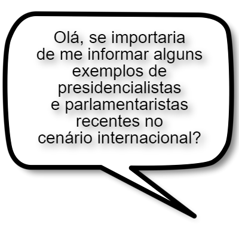

Bem-vindo(a) ao nosso trabalho de filosia..
Start
O que é presidencialismo de coalizão?
É uma forma de governo em que um monarca exerce a função de chefe de Estado e mantém-se em tal cargo até a sua morte ou abdicação.
É um sistema de governo regido por uma pessoa ou entidade política onde não há participação popular, ou em que essa participação ocorre de maneira muito restrita.
É um sistema de governo onde se realiza alianças e acordos entre partidos ou forças políticas distintas, com um determinado objetivo. Geralmente, esses acordos têm como finalidade a ocupação de cargos em um governo em troca de apoio no processo de legislativo.
É um tipo de sistema de governo em que o chefe de estado é uma pessoa diferente do chefe de governo. Nesse sistema, o poder executivo é limitado pelo poder legislativo (parlamento) e, assim, precisa do parlamento para ser criado e até governar.
Quais dessas premissas básicas mais se encaixam na ideia de construção do presidencialismo de coalizão
Para se aprovar uma lei precisa-se do voto do poder Executivo; Então se faz um acordo entre partidos para conseguir a quantidade necessária de votos. Logo, cargos são distribuídos em troca desse apoio.
Para se aprovar uma lei precisa-se da maioria dos votos do Legislativo; Então se faz um acordo entre partidos para conseguir a quantidade necessária de votos. Logo, cargos são distribuídos em troca desse apoio
Para se aprovar uma lei precisa-se da maioria dos votos do povo; Então se faz um acordo entre partidos para conseguir a quantidade necessária de votos. Logo, cargos são distribuídos em troca desse apoio.
Para se aprovar uma lei precisa-se da maioria dos votos do poder Legislativo; Então os partidos organizam estratégias para estar em maior número. Logo, o partido que for a maioria ganha a decisão.
A coalizão só acontece no presidencialismo?
Sim, a coalizão só acontece no presidencialismo porque os acordos criados na coalizão têm como finalidade a ocupação de cargos em um governo em troca de apoio no processo de legislativo, isso só pode acontecer no presidencialismo.
Não, a coalizão também pode ocorrer em exemplos de regimes autoritários e totalitários, já que todo o governo concorda com as ideias do soberano, sendo assim uma grande aliança.
Sim, a coalizão só acontece no presidencialismo porque o modelo de governo de outros sistemas não permite que a ideia de coalizão seja acrescentada.
Não, ela ocorre em regimes parlamentaristas também, nos quais, para se eleger alguém é necessário a maioria dos votos, então já que não é muito provável que apenas um partido consiga a maioria, eles fazem coalizões com base no que é mais favorável.

A consolidação do presidencialismo de coalizão no Brasil ocorreu após a Constituição Federal/88, entretanto, o país já flertava com o sistema desde a Proclamação da República em 1889. Sendo assim, exceto em períodos ditatob riais e outras experiências com alguns regimes, o presidencialismo de coalizão se fez presente tanto na Primeira República (1889-1930), quanto na Segunda República (1946-54), além dos dias atuais. Consegue citar exemplos de coalizão em sistemas presidencialistas e parlamentaristas recentes no cenário internacional.
Recentemente, no cenário internacional, é possível encontrar países como Venezuela e os Estados Unidos, que adotam sistemas de coalizão. Sendo a Venezuela um país parlamentarista e os Estados Unidos um país semipresidencialista.
Recentemente, no cenário internacional, é possível encontrar países como a Arábia Saudita e Brunei que adotam sistemas de coalizão. Sendo a Arábia Saudita um país parlamentarista e a Brunei um país semipresidencialista.
Recentemente, no cenário internacional, é possível encontrar países como Rússia e China, que adotam sistemas de coalizão. Sendo a Rússia um país parlamentarista e a China um país semipresidencialista.
Recentemente, no cenário internacional, é possível encontrar países como Alemanha e França, que adotam sistemas de coalizão. Sendo a Alemanha um país parlamentarista e a França um país semipresidencialista.